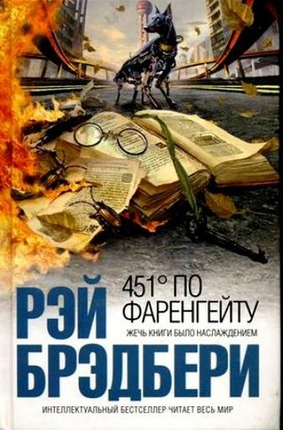

 Научно-фантастический роман-антиутопия Рэя Брэдбери, изданный в 1953 году. В эпиграфе романа говорится, что температура воспламенения бумаги — 451 °F (233 °C). В романе описывается общество, которое опирается на массовую культуру и потребительское мышление, в котором все книги, заставляющие задумываться о жизни, подлежат сожжению; хранение книг является преступлением; а люди, способные критически мыслить, оказываются вне закона. Главный герой романа, Гай Монтэг, работает «пожарным» (что в романе подразумевает сожжение книг), будучи уверенным, что выполняет свою работу «на пользу человечества». Но в скором времени он разочаровывается в идеалах общества, частью которого он является, становится изгоем и присоединяется к небольшой подпольной группе маргиналов, сторонники которой заучивают тексты книг, чтобы спасти их для потомков.